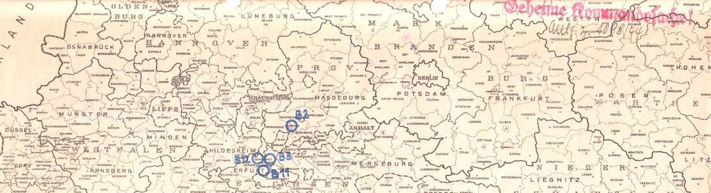

Nazi Tunnels
Underground Factories and Forced Labor Camps at Porta Westfalica

Primary Source Repository
- Recollections on the Holocaust - Protocol Nr. 3645
- Betr. Sprengung der Stollen und Hohlräume im Jakobsberg an der Porta-Westfalicia
- USC Shoah Foundation Institute Testimony of Dorothy Berliner
- USC Shoah Foundation Institute Testimony of Elisabeth Berwald
- USC Shoah Foundation Institute Testimony of Miriam Brach
- USC Shoah Foundation Institute Testimony of Leny Bromet
- Notes from Folder N 653, 109, 22, H 1 EG, 27, 1, 5
- Notes from folder RW 19,1788,22,H 1 EG,190,3,6
- USC Shoah Foundation Institute Testimony of Susanne Burton
- After Action Report April 1945
- Fragebogen und Bericht von Aage Holger Christensen
- USC Shoah Foundation Institute Testimony of Juliette Cronheim
- Gespräch mit Zsuzsa D Farago am 6.3.1992 in Budapest
- Can You Trace the Following Subjects?
- Protokoll von Eva Gescheid
- Fragebogen für das dänische Konzentrationslagerweißbuch Axel Christian Hansen
- Interview with Kitty Hart-Moxon
- Kitty Hart-Moxon Interview with Imperial War Museum
- USC Shoah Foundation Institute Testimony of Kitty Hart-Moxon
- 38/111/44g Letter from Himmler to Pohl
- Der Einsatz von Strahlflugzeugen hat die absolute Überlegenheit über die feindlichen Maschinen erwiesen
- Fragebogen und Bericht von Kaj Björn Karbo
- Jørgen Kieler - Grüsse an Porta Westfalica
- Denkmalstollen Entrance
- Fotografi Af Hotel Kaiserhofs Bagside
- Hall in Kaiserhof Hotel
- Satellite Camps - Porta Westfalica--Barkhausen
- Hausberge-Luftaufnahme
- Interview mit Vincent Lind 24./25.8.91 in Odense
- Aussage von T. L.January 28, 1945, Amsterdam
- USC Shoah Foundation Institute testimony of Ágnes Lukács
- Gespräch mit Agnes Lukács am 8.3.92 in Budapest
- USC Shoah Foundation Institute Testimony of Tobie Markowitz
- Interrogation of Albert Speer after the war
- Grubenräume für die Aufnahme von Fertigungsstätten aus luftgefährdeten Gebieten
- Dachs 1 Lubricating Oil Plant Porta, Germany
- USC Shoah Foundation Institute Testimony of Ester Ovitz
- Gespräch mit Györgyné (Zsuzsa) Papp am 10.3.1992 in Budapest
- Fragebogen von Jens Godske Pedersen
- A2 name change to B1 Dachs I
- Hammerwerke to make room for Firma Novella
- Bericht von Charlie Jörgen August Rasmussen
- Aufstellung der 7. Staffel/Fliegergruppe Z.B.V.7
- SS taking over projects from Jägerstab, A-Vorhaben (existing caves and mines) and B-Vorhaben (mines and caves to be constructed)
- English: Royal Air Force Bomber Command, 1942-1945
- Interview mit Nikolaij Sadowskij am 3.9.1993 in Kiew/Ukraine
- USC Shoah Foundation Institute Testimony of Lili Springer
- Bericht von Erik Sundö
- Gespräch mit Klári Sztehlo am 12.3.92 in Budapest
- Nach dem Kriege einen Wettbewerb für den besten Stollenbau in den einzelnen Groß-, Mittel- und Kleinstädten durchzuführen
- Fragebogen von Carl Wilhelm Taxbro
- The United States Strategic Bombing Survey Summary Report (European War). Washington, D.C.: War Department. U.S. Strategic Bombing Survey. Office of the Chairman. 11/3/1944-10/8/1947
- The Samuel and Irene Goudsmit Collection, 1944-1985 Finding Aid
- Underground and Dispersal Plants in Greater Germany. 2nd ed
- Subject: Demolition of the Establishment of the Jakobsberg; List 'A', Item 5 and 6 – 817 C/N
- USC Shoah Foundation Institute Testimony of Brakhah Vider
- Fragebogen und Bericht von Knud Weise
- Auszug aus dem Fragebogen und Persönlicher Bericht von Arne Zachariassen
- Schreiben von Dimitrij Iwanowitsch Zwagolskij
Last edited on 22 Mar 2016